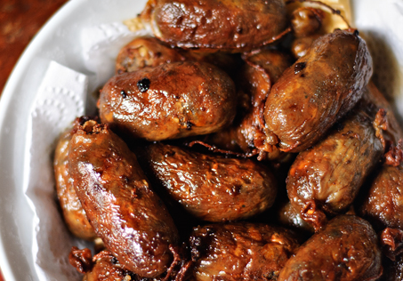

Ilocos Longganisa

Ilocos longganisa (often called Vigan longganisa) is a famous, small, and plump Filipino pork sausage known for being intensely garlicky, savory, and tangy rather than sweet.
Ingredients
- 1 kilogram ground pork (with about 30% fat for juiciness).
- 1 whole garlic bulb, finely minced (very generous amount).
- 2 tablespoons Sukang Iloko (native Ilocos sugarcane vinegar) or cane vinegar.
- 1 tablespoon salt1 teaspoon ground black pepper.
- 1 tablespoon soy sauce (optional, for color).
- 2 tablespoons brown sugar (optional, traditional versions are savory/sour).
- 1 teaspoon paprika or annatto powder (optional, for color).
- Hog casings (rinsed and soaked) or wax paper (for skinless).
Step-by-Step Process
1. Mix the meat: In a large bowl, combine the ground pork, minced garlic, vinegar, salt, black pepper, soy sauce, sugar, and optional paprika. Mix thoroughly by hand until well incorporated.
2. Marinate: Cover the bowl and refrigerate the mixture for at least 6 hours or overnight to let the robust garlic and vinegar flavors develop.
3. Form or stuff:With casings: Stuff the meat mixture into prepared hog casings using a funnel or sausage stuffer, twisting every 3 inches to create small, plump links.
Skinless version: Scoop portions of the meat mixture, roll them into 3-inch logs, and wrap them individually in small sheets of wax paper or plastic wrap.
4. Cook: Place the longganisa in a pan with about 1/2 cup of water. Cover and simmer over medium heat until the water completely evaporates. Allow the sausages to fry and brown in their own rendered pork fat until crispy on the outside.
5. Serve: Serve hot with garlic fried rice (sinangag), a fried egg, and a side of spiced vinegar for dipping.